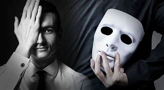
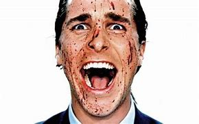

| 5 |
PSICOPATA CODICIOSO |
Un psicopata codicioso es aquel que, sintiendo que la vida no le ha dado lo que merece, está en constante búsqueda de retribuciones y de momentos para engrandecerse. Cometen actos negativos bajo la premisa de que, con ellos, van a restablecer el equilibrio que se les ha sido alterado. Con rasgos de agresividad, celosia y codicia, sienten rabia por los exitos de los otros y cometen actos criminales o amorales para lograr su propio beneficio. |
|
| 6 |
PSICOPATA DEBIL |
Un psicopata debil es aquel que, pese a tener una personalidad llena de dudas y de miedos al saber que no son lo que profesan ser, proyectan una imagen de falsa seguridad y realizan agresiones fisicas o verbales para que los demas crean que son peligrosos. Al fin y al cabo, resultan caricaturas de los psicopatas malevolos o tiranos, pues a la primera de cambio queda claro que en el fondo se esconde un grave problema de autoestima. |
|
| 7 |
PSICOPATA SOLAPADO |
Un psicopata solapado es aquel que se caracteriza especialmente por su falsedad, con una conducta aparentemente sociable y amigable que, en realidad, oculta una gran frialdad y deseo de manipulacion. Son personas resentidas que tienen una vida social amplia en la que buscan satisfacer su necesidad de atencion pero, para ellos, las relaciones son superficiales y no dudan en obtener beneficio de aquellos que forman parte de su circulo. |

|
| 8 |
PSICOPATA CARENTE
DE PRINCIPIOS |
Un psicopata carente de principios es aquel que, con unos rasgos de personalidad extremadamente narcisistas y egolatras, tiende a mantenerse fuera de la legalidad y de la etica para conseguir sus metas y objetivos de vida. Son especialmente habiles para crear complejas mentiras, carecen de conciencia social, se sienten superiores a los demas, son manipuladores, tienen una personalidad fria y suelen explotar a los demas. |

|